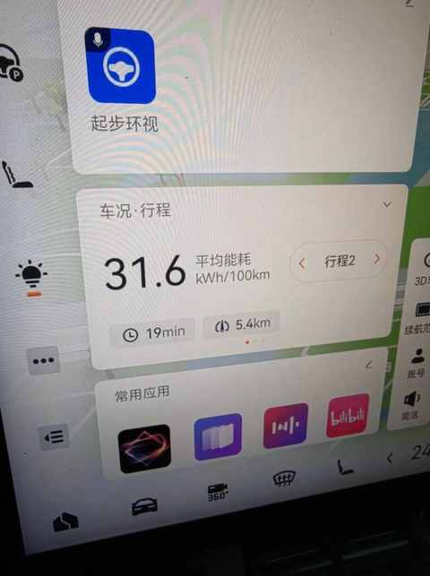
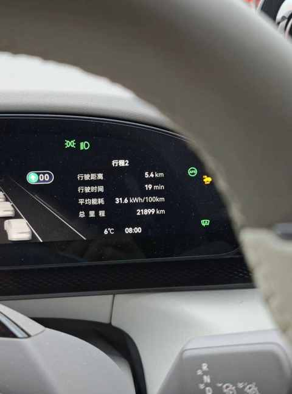
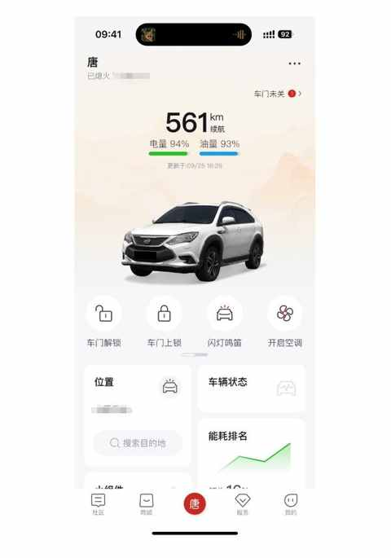
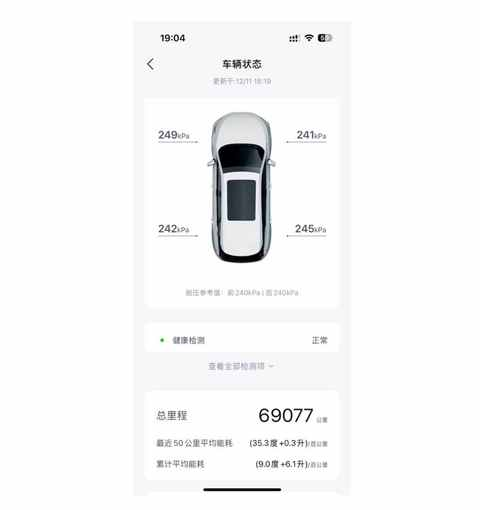
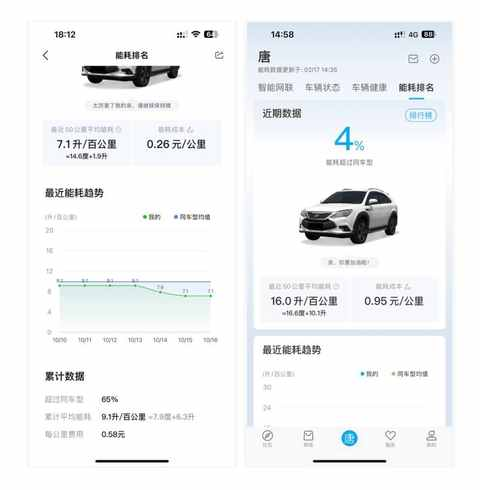
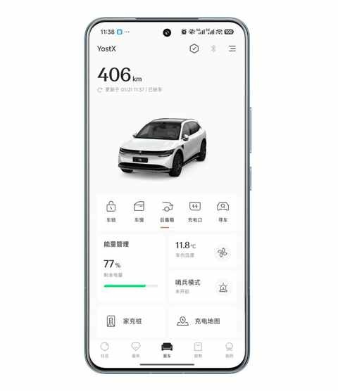
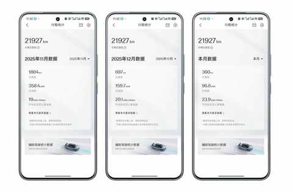

从插混换到纯电，一年开2万公里后，我已经不在意能耗且没有里程焦虑！
一、引子
昨天上海降温明显，早上开车送娃上学的时候把空调、座椅加热、方向盘加热全都开了，车内温度上来的挺快。

返程的时候，路过一个红绿灯较长的路口，便看了看能耗情况，不同于之前的 6.5，新的 6.7 在中控大屏上看能耗方便不少，赫然写的是 31.6，一个一年多以来未见过的能耗数值。

随即快速操作方向盘上的按钮，看仪表盘上面的信息做确认，没有看错，是 31.6 这个数值！

这整个过程很平静，拍完这两张图，反而不由自主的笑 了 起来。
从插混转到纯电这一年多来，对偶尔偏高能耗已经完全不在意，心态上完全接受这种情况的出现，因为这并不影响用车体验，是无伤大雅的小插曲。
二、能耗与里程焦虑
既然是要聊能耗与里程焦虑，必然会涉及到上一辆车，也就是从 2017 年 5 月份用到 2024 年 12 月下旬的比亚迪初代插混SUV：唐 80，在过程中形成了对能耗与里程焦虑的认识和认知情况。

1️⃣ 插混车型的能耗构成
下图是在卖车前的 APP 截图，有展示出：总里程、最近 50 公里平均能耗、累计平均能耗，插混车型的能耗会显示耗电量和耗油量两个维度。

由于是初代插混SUV，技术成熟度不够，其能耗是偏高的，但在电量充足的情况下，有很好的加速性能。

上图左边部分为夏天电量较为充足情况下的能耗数据，右边是冬天电量不足情况下的能耗表现。
在 7 年多日常用车的过程中，除了刚开始的几个月，接下来便很少关注能耗情况，基本就是没电了便找地方充电，要去远点的地方便去加油站加满油。
2️⃣ 一次有里程焦虑的经历
记得是6年多前的事情，当时从老家返程到上海，年初五的高速很堵，仅仅是进高速就排队了有一个小时。
天冷一直开空调，越堵车能耗越高，不到半程的时候油量已经只能一格半，显示的续航里程是 150km，此时最要紧的事情就是去服务区加油。
在这种情况下又遇到连续两个服务区关闭，中间的几十公里为了防止再遇到服务区关闭而不得不下高速的情况，是把空调关一会儿灯起雾了再开，希望能保留多一点油量。
终于在深夜排队进了第三个服务区，稍微休整下便去排队加油，大老远就听到工作人员在挨个敲车窗，重复说着一句话：车流量大，每辆车最多加 200 块钱的油……
对这次600km返程之旅，记忆犹新的两个点是：
① 耗时过长
加休息的几个小时，一起折腾了 17 个小时，日常大概 8 个小时
② 里程焦虑了
一个因素是馈电+怠速的油耗偏高，另一个因素是没想到连续多个服务区不能进，遇到能加油的服务区的时候又叠加限制加油量的 buff。
3️⃣纯电让我不再焦虑
按网络上的情况来分析，纯电车对于许多人来说有不小的里程焦虑，冬季能耗高和节假日高速补能不方便的问题依然没有被解决。

也是在换成纯电之后才感知到的一个点：纯电车越用越不焦虑，其核心在于自身用车需求和场景与车辆特点的匹配。

仔细思考，不焦虑与下面几个因素息息相关：
① 单一的补能形式
纯电车的补能形式，有且仅有一个：充电，可快充、可慢充、部分车型支持换电。
之前使用插混的时候，宣传上是可油可电，实际日常使用的时候是既要充电也要加油，尤其是没有家充桩的情况，每次充电得去到附近的慢充桩进行。
② 车辆特点鲜明
由于纯电车电池的物理特性，必然让车辆变重，其整体续航和温度相关，冬天的高速能耗偏高，续航里程打折明显。
一体两面的是，纯电车的智能化、动力、舒适性配置等方面会有明显提升，各种因素杂糅在一起能带来用车体验的提升。
③ 匹配度
主要是指：用车需求、用车场景、车辆特点的匹配。
以下是梳理的个人情况：
- 用车需求： 1）日常接送娃上下学，单日 20km 左右 2）周末偶尔长途出行，单程 100-300km 为主 3）节假日往返老家，单程 600km，偶尔充电需排队
- 用车场景： 1）多人或全家出行为主，单人出行偏少 2）住在郊区，有家充，补能方便
3）主要在长三角区域活动，冬季温度不低
- 车辆特点： 1）选配100kWh大电池，续航有保障，支持快充 2）舒适性配置充足，前后排座椅加热通风按摩，后排电动调节等 3）尺寸大小适中，乘坐空间与载物空间充足
我们无法抛开这几个因素，去聊现在主流的几个驱动形式的优劣：纯油、增程、插混、纯电。
整体来说，纯电车能更好地满足我的用车需求和场景。
三、结语
于是，那个看到 31.6 这个能耗数据后不由自主的“会心一笑”，便有了一个确切的答案。
当出行工具与生活节奏同频，中控屏和仪表盘上的数字就只是数字， 选择一辆车，最终是在选择一种与自我需求高度匹配的生活方式。